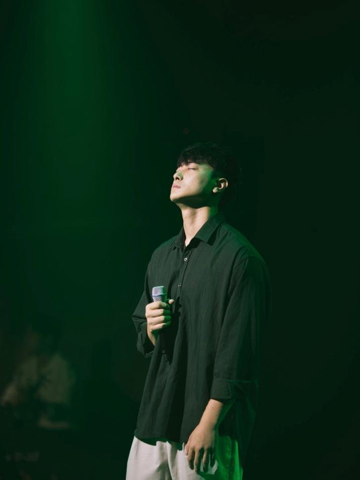

한병호는 노래로 위로를 전하는 싱어송라이터이자 뮤지컬 배우입니다. 호소력 짙은 목소리로 통기타를 치며 노래하고, 신나는 댄스 가요부터 트롯과 뮤지컬 넘버까지 폭넓게 소화해 관객 연령이 다양한 행사에서 분위기를 맞춥니다.

방송·앨범 경력
- KBS '더 딴따라' 출연
- MBC '듀엣가요제' 출연
- 싱글 '소중한 너' 앨범·뮤직비디오 발매
- 가수 콘서트 게스트·앨범 코러스 참여
이런 자리에 잘 맞아요
- 지역 축제·주민 행사
- 기업 행사·송년회 축하공연
- 기념식 축하 무대
공연 구성
- 통기타 라이브 또는 MR 공연(협의)
- 댄스 가요·트롯·뮤지컬 넘버 중 행사에 맞춘 곡 구성
- 관객 연령과 분위기에 맞춘 셋리스트
섭외 진행 순서
- 문의: 날짜·장소·공연 시간 확인
- 일정 확인과 견적
- 계약: 주식회사 위메이커 명의
- 셋리스트와 음향 사전 협의
- 행사 당일 리허설과 공연
자주 묻는 질문
섭외 비용은 어떻게 정해지나요?
행사 날짜와 장소, 공연 시간, 편성에 따라 달라집니다. 날짜와 장소를 알려 주시면 일정을 확인해 견적을 보내 드립니다.
음향 장비도 준비해 주나요?
필요하면 메이커팀이 무대와 음향까지 함께 준비합니다. 행사장 음향을 쓰는 경우에는 공연 전에 장비 사양을 확인합니다.
원하는 곡을 넣을 수 있나요?
행사 성격에 맞춰 셋리스트를 제안하고, 원하시는 곡이 있으면 미리 협의해 반영합니다.